Connectors 入門
給已經會用 Claude 聊天、每天要翻信箱、對行事曆、找雲端檔案的學生和上班族。不用會寫程式。
- 說出 Connector 是什麼：它需要時自己到你授權的 App 找資料，也能在裡面動手。
- 連上 Gmail、Google Calendar（Google 日曆）、Google Drive（雲端硬碟），需要的話再加 Notion，並確認對話裡的連接器開關有開。
- 在一個 Project 裡用三個連接器把一場會議準備好：回信、把會議記進日曆、把雲端的資料匯出下載、存回摘要並起草下一封信。
- 看懂寫入前的確認畫面，知道怎麼中斷連接，以及自己的方案能做到哪。
這課你會動手做
連上自己的 Gmail、日曆和雲端硬碟，照「統合分析進度會議」的情境做一次。做完，你會寄出一封由 Claude 擬好的回信、在日曆裡多一個會議行程，手上拿到從雲端匯出的 Excel 和 Word，雲端多一份進度摘要、Gmail 多一封待寄的草稿。
Connector 是什麼
怎麼把 Gmail、行事曆、雲端硬碟接上 Claude，讓它幫你排行程、回信、找檔案？
答案是 Connector（介面上叫「連接器」）。接上之後，Claude 可以直接到你授權的 App 讀資料，也能在裡面動手：擬草稿、建行程、存檔。照預設，要動手之前它會先問你。
沒有連接器的時候，要 Claude 幫你處理信件或檔案，得自己先找出來：打開信箱翻那封信、複製內文貼進對話；到雲端硬碟下載檔案、再上傳給它。資料一多，光是搬資料就要花不少時間。
接上連接器之後，你只要說要做什麼，它會自己去信箱搜尋、到雲端硬碟找檔案、看你的行事曆，讀完再回答你。它只讀這次任務找得到、用得上的部分，不保證不漏；重要的事，請它附上讀了哪封信、哪個檔案，自己點開對一次。
一個情境
你平常用 Gmail 收信、用 Google Calendar 排行程、把資料放在 Google Drive。今天教授寄信來：下週日早上要開會，請你回信確認會不會到，會前把他要的資料整理好寄給他。那些資料就在你的雲端硬碟裡。
你要做三件事：回信說會出席、把會議記進行事曆、把雲端的資料拿出來準備。接上連接器之後，這三件事在 Claude 的同一個 Project 裡就能交代完。要連起來的是這四個：
圖中的 logo 屬於各公司，這裡只用來標示是哪個服務。連接器背後用的是一套叫 MCP 的通用接法；想接清單上沒有的服務，可以自己加「自訂連接器」，這課用不到。
這段重點它需要時自己去 App 裡找，也能動手
Connector 是什麼
為什麼值得接：資料散在三個地方
一件事的資料常常分散：要求在信箱，檔案在雲端硬碟，期限記在行事曆。接上之後，一句話就能跨 App 整理。
拿開頭那個情境來說。以前你要打開信箱找那封信、自己回信，打開行事曆手動輸入時間地點，再到雲端硬碟把資料一個個找出來下載。接上連接器後，在同一個 Project 裡交代幾句話就好：它去 Gmail 找信、擬好回信，去 Google Calendar 記下會議，到 Google Drive 把資料匯出給你下載，順便整理重點。每一個要改到你 App 的動作，它都會先問你。後面「情境演示」會完整走一遍。
大家最常拿來做的事
- 整理信箱：這幾天有哪些重要信、哪些還沒回
- 擬回信：讀完那封信，先擬一份草稿給你看
- 從信裡抓日期排進行事曆：考試、報告、會議
- 在雲端硬碟找檔案並摘要：上次的會議紀錄、某一科的講義
這段重點一句話，跨信箱、雲端、行事曆
怎麼連
接上 Gmail、Google Calendar、Google Drive
在網頁版 claude.ai 做，免費版就可以。三個 App 一個一個接，這課三個都用同一個 Google 帳號登入授權。
- 左側欄點「自訂」，上方切到「連接器」，右邊切到「探索」。這裡跟裝 Skill 是同一個地方，細節可以看「Skills 入門」那課。
- 在「最多人使用的連接器」找到 Gmail，按那一列右邊的「＋」。
- 跳到 Google：選你要接的 Google 帳號，按 Continue（繼續）。
- 權限頁的方框預設都沒勾，先勾最上面的 Select all（全選），再按 Continue。
- 回到 Claude，右下角出現「已連接至 Gmail。」就好了。
- Google Calendar、Google Drive 照同樣步驟各接一次。
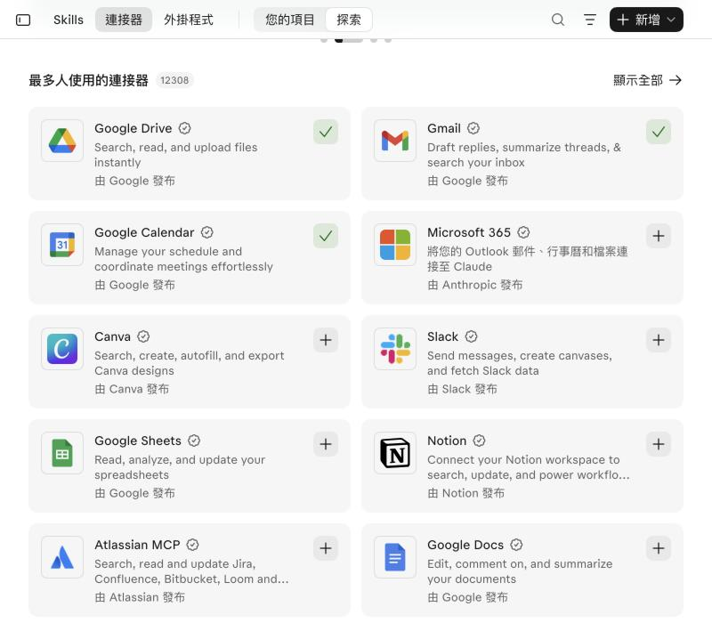
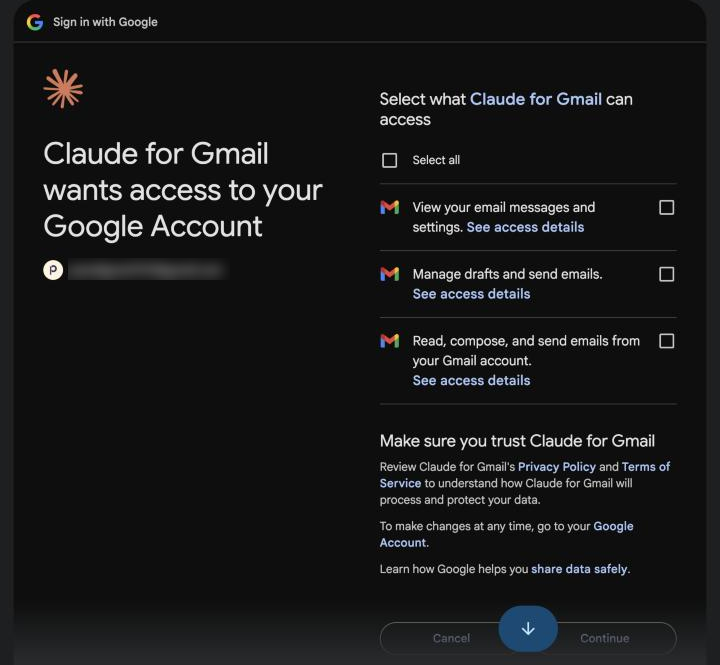
付費方案的介面，左側欄這裡叫「外掛程式」（Skills 和連接器的總稱），進去一樣有「連接器」分頁，搜尋 Gmail 打開就能連。你的畫面若跟這裡不同，找「自訂」或「外掛程式」其中一個。
接之前先知道
- 它只看你接的那一個 Google 帳號。 資料放在別的帳號就找不到。一次只能連一個（我們實測沒有加第二個帳號的入口）；要換帳號，先中斷連接再用另一個接。
- 學校或公司的 Google 帳號可能被管理員擋住。 用公司信箱前，先確認公司允不允許把信件交給 AI 工具；只是想練習，先用個人帳號。
- 它不會拿到超過你本人的權限。 你沒權限的檔案它讀不到；別人分享給你的，它也可能讀得到。
這段重點自訂 → 連接器 → 用 Google 帳號授權，權限要全勾
怎麼連
最常卡的一步：設定顯示已連接，Claude 卻說找不到
設定裡連好，只是「接上了」。每個對話還有自己的開關，開著它才會用。
- 開一個新對話，按輸入框左下的「＋」。
- 選「連接器」，旁邊會列出你接過的連接器，每個一個開關。（付費版這一項叫「外掛程式」。）
- 確認 Gmail、Google Calendar、Google Drive 三個都打開。剛連好的預設是開著的。
- 注意：這些開關是整個帳號共用的。在一個對話關掉，開新對話也還是關的，要自己開回來。
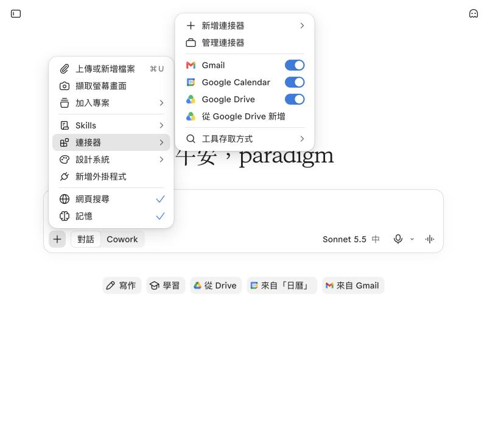
開關沒開時，它不一定會報錯：我們實測關掉 Gmail 再問信，它回「我這邊沒辦法開啟 Gmail」，然後改從雲端硬碟的文件找答案。所以它說沒辦法開啟、找不到，或答案看起來不是從信裡來的，照這個順序查：
- 這個對話的開關有沒有開。
- 接的是不是放這些資料的那個 Google 帳號。
- 你自己打開 Gmail 或雲端硬碟，找不找得到那封信、那個檔。
- 把寄件人、檔名、日期講具體一點再問一次。
- 出現「尚未完成」或授權錯誤，才回「自訂 → 連接器」重新連接，權限頁記得全勾。
想再接 Notion
筆記和待辦都放在 Notion 的人，可以再接一個 Notion，做法一樣：在「探索」找到 Notion，按「＋」，用 Notion 帳號登入、選要給它讀的頁面。接好後一樣要在對話的「＋ → 連接器」打開。免費版按 Notion 的「＋」沒有要你升級，會直接跳到 Notion 的登入頁，用你自己的 Notion 帳號授權就好。其他 App（Microsoft 365、Slack 等）大致也從這裡開始，但帳號和管理員的要求可能不同。
這段重點每個對話的開關要開
各能做什麼
大家最常用的三個 connector，各能幫你做什麼
Gmail、Google Calendar、Google Drive 是最多人連的三個。每個連接器都分「讀」和「寫」。先只讓它讀、把要寫的內容在對話裡先寫給你看；看過結果，再讓它動手。
| 讀（不會改到任何東西） | 寫（會改到你的 App） | |
|---|---|---|
| Gmail | 搜尋信件、讀整串對話、讀附件（約 12 MB 內）、挑出重要信 | 擬草稿、回信、寄信、轉寄、加標籤、丟垃圾桶 |
| Google Calendar | 看行程、找空檔、找跟別人共同的空檔 | 建立、修改、刪除行程，回覆邀請 |
| Google Drive | 搜尋檔案，讀 Google 文件、試算表、簡報和 PDF | 上傳、建資料夾、把 Claude 做好的檔存回雲端、移動、分享 |
做不到、要注意的
- 看不到 Google 文件裡的圖片。 只讀得到文字。
- 附件：每個附件大約 12 MB 以內；要讀附件內容，設定裡要開「程式碼執行與檔案建立」。
- 把檔案存回雲端硬碟，要先在設定裡開「程式碼執行與檔案建立」。
- 下載到你的電腦：可以，但要你自己按下載。它會把 Google 文件匯出成 Word、試算表匯出成 Excel，對話裡出現檔案卡片，點開預覽或按「下載全部」。它不會直接存進你電腦的資料夾。畫面在「情境演示」第 ④ 步。
- 存回雲端的 Google 文件，要再改得另接 Google Docs 連接器。 只接雲端硬碟，它能建新檔，但不能編輯文件內容。
這段重點先讀，看過再讓它動手
情境演示
教授來信要開會：在一個 Project 裡把事情做完
教授來信：下週日早上開進度會議，要你回信確認、會前把資料寄給他。先開一個 Project，在裡面交代四件事：回信、記進日曆、把資料匯出下載、把整理好的摘要存回去並起草下一封信。
信件和資料都是虛構的示範用檔案（示範用的是一份研究的資料表和文件，換成你自己的資料一樣做）。這一章用的是付費帳號的畫面，確認框長得跟免費版不太一樣，下一章會對照。
① 開一個 Project
- 左側欄「專案」→ 右上「新增專案」。
- 「您正在進行什麼工作？」填這件事的名字（示範填「SGLT2 統合分析」），「您想達成什麼目標？」寫一句這個專案要做什麼，按「建立專案」。Project 怎麼用，詳見「Chat 與 Project」那課。
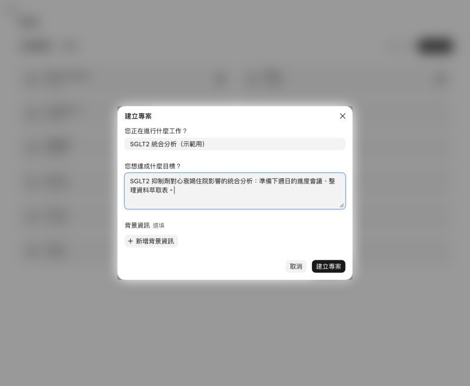
② 請它找出那封信、回信
林醫師寄信通知我統合分析的進度會議。幫我找出那封信，回信跟老師說我會準時出席，資料萃取表和納入排除標準會在前一天晚上 9 點前寄出。寄出前先給我看草稿。
大約 20 秒，它找到那封信，列出時間、地點和老師要你準備的兩件事，再給一份回信草稿。署名它不知道，會留空讓你填。
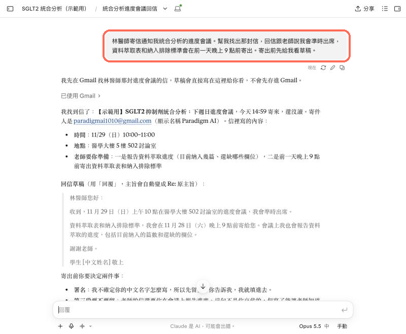
看過草稿，回它：「署名寫『學生 阿糰』，其他不改，寄出。」要寄信之前，輸入框上方跳出確認框，而且把要寄出的內文整段列出來。內容對了，按「傳送回覆」。
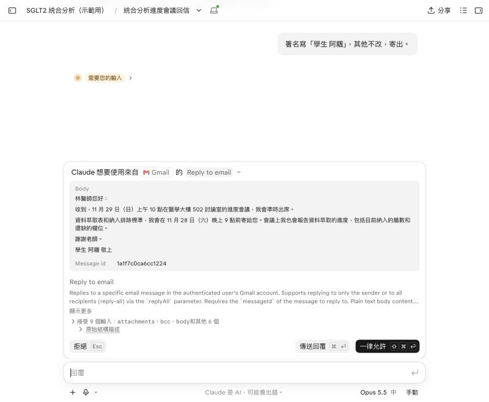
寄出後它那一則回覆用了英文。遇到這種情況，下一句加「請用中文回答」就好。
這段重點開一個 Project，再交代
情境演示
記進日曆、把資料匯出下載
③ 照那封信，把會議記進 Google Calendar
照那封信把進度會議記進我的 Google 日曆，地點也寫上，備註寫老師要我準備的兩件事。
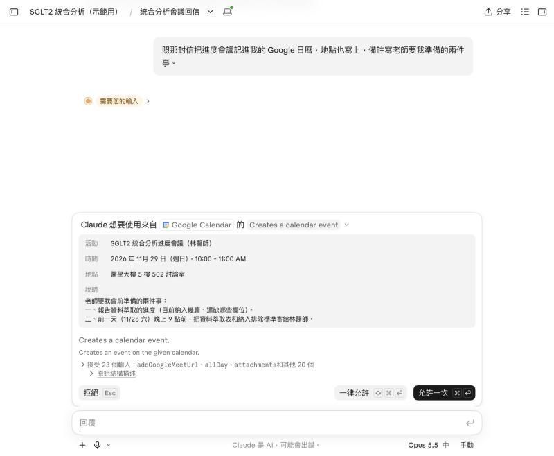
確認框出現時，看三樣：
- 建在哪、給誰：寄信看收件人；建行程看是不是你的日曆、有沒有加入其他邀請對象。
- 日期時間：是不是你要的那天、那個時段。
- 內容：標題、地點、信件內文有沒有寫錯。
三樣都對，按「允許一次」。不對就按「拒絕」，告訴它哪裡要改。按拒絕不會寫入任何東西。「一律允許」代表這個動作以後都不再問你，剛開始不要按。
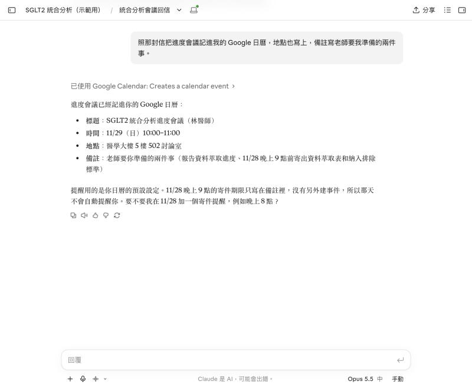
④ 把雲端硬碟的兩份資料匯出下載，順便報進度
接著到我的雲端硬碟找「SGLT2統合分析」開頭的兩份資料，資料萃取表匯出成 Excel、納入排除標準匯出成 Word，讓我下載到電腦；順便告訴我萃取表目前納入幾篇、還缺哪些欄位。
這一步只讀，不跳確認框。大約 30 秒，它回報納入 12 篇、缺的欄位都在第 12 篇，還主動指出兩個會議上可能被問的地方。
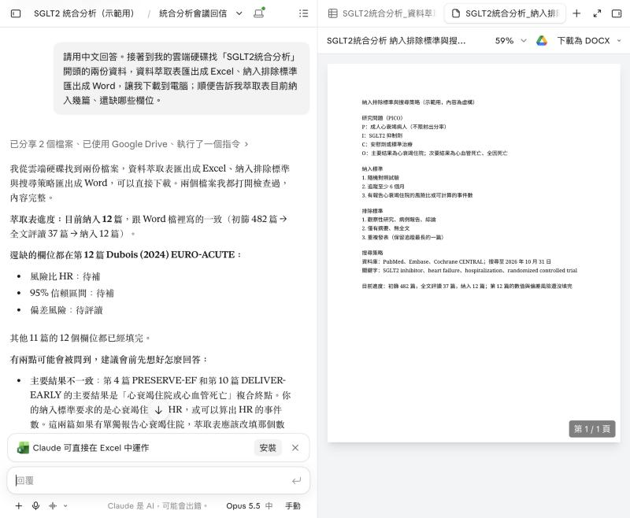
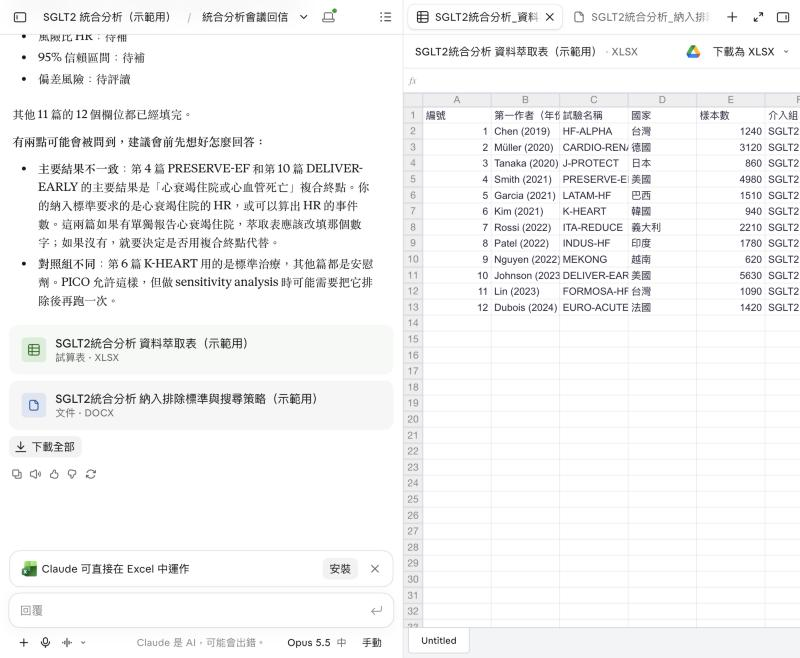
這段重點內容看對了，按允許一次
情境演示
把摘要存回雲端，再起草一封信給老師
⑤ 存成 Google 文件、起草信件（只存草稿，不寄）
把剛剛的進度摘要（納入幾篇、還缺哪些欄位、兩個可能被問的問題）存成一份 Google 文件放到我的雲端硬碟，檔名「SGLT2統合分析_進度摘要」。再起草一封信給林醫師，附上資料萃取表、納入排除標準和這份摘要的連結，先存成 Gmail 草稿、不要寄出。請用中文回答。
這一句有兩個寫入動作，所以會跳兩次確認框：先是在雲端硬碟建檔，再是在 Gmail 建草稿。每個都列出要寫入的內容。
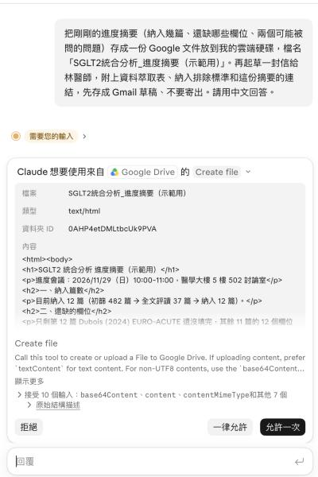
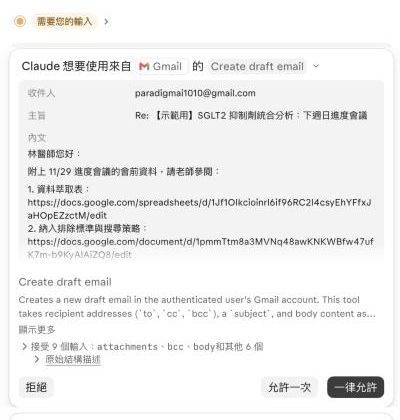
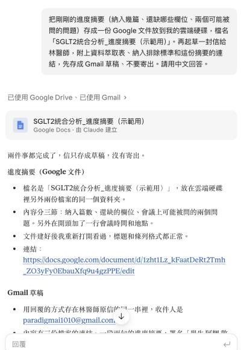
打開 Gmail 的草稿匣看一次，內容對了再自己按傳送。它整理的數字和欄位，開會前自己打開檔案對一次。
這一趟，你用 connector 做到了什麼
- 找出教授那封信，整理出時間、地點、要準備的事
- 回信說會出席（寄出前先看過）
- 起草下一封信，附上三份資料的連結，存成草稿
- 把會議記進行事曆，連地點和要準備的事一起寫上
- 找到兩份資料，匯出成 Excel、Word 下載
- 整理出目前進度和缺什麼
- 把進度摘要存回雲端
以前要開三個 App、來回複製貼上的事，這次只在一個對話裡交代。每一個會改到你 App 的動作，都先經過你按允許。
這段重點一個 Project，三個 connector，把事情做完
寫入前會先問你
它會先問你：照預設的權限
照預設，會改到你 App 的動作（寄信、建行程、存檔、刪除），執行前都會先跳確認。讀信、讀檔這種只讀的動作不會問。
打開任一個連接器的頁面，下面是「工具權限」：唯讀工具預設「永遠允許」，寫入和刪除工具預設要核准。每個工具右邊有三個小圖示（允許／需核准／封鎖），可以一個一個改。在確認框按過「永遠允許」的動作，就會變成不再問。
確認框有兩種長相
- 免費版：出現在對話裡，標「需要您的輸入」，卡片寫「Claude 想要使用來自 Google Calendar 的 Creates a calendar event」，按鈕「拒絕｜允許一次｜永遠允許」。
- 付費版：出現在輸入框上方，會把要寫入的內容列出來（信的內文、行程的時間地點），按鈕依動作不同：寄信是「拒絕｜傳送回覆｜一律允許」，建行程是「拒絕｜一律允許｜允許一次」。
付費版的按鈕順序會依動作換位置，深色那顆不一定是「允許一次」，按之前看字。兩種都一樣：按「允許一次」或「傳送回覆」就做這一次；按「永遠允許」或「一律允許」，這個動作以後都不再問你，剛開始不要按；按「拒絕」什麼都不會寫入。
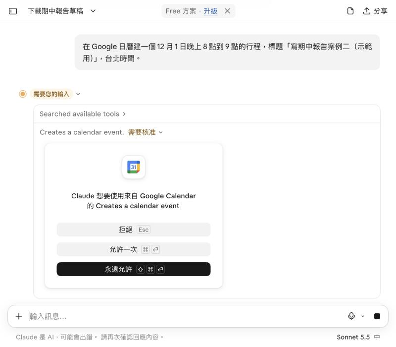
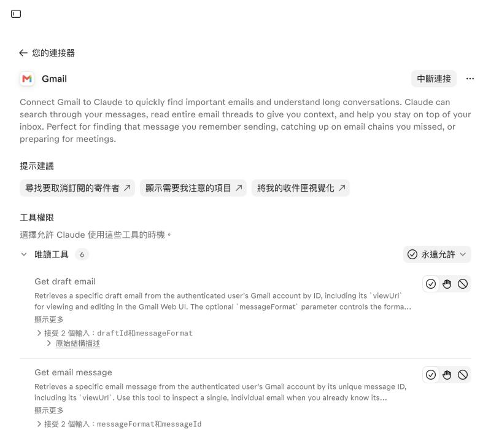
不想用了：中斷連接
- 左側欄「自訂」→「連接器」→「您的項目」，打開那個連接器（例如 Gmail）。
- 按右上角的「中斷連接」。付費版在「已連接」那一列右邊的「⋯」裡。
只是這次對話不想讓它碰，關掉對話裡「＋ → 連接器」的開關就好，不用中斷連接。
資料方面：官方說明寫，Google 連接器取回的資料跟著那個對話保存；訓練和刪除的細節，以官方說明為準（連結在課程最後）。
信件和檔案裡也可能藏著要 Claude 照做的字。怎麼防，下一課「Connector 安全設定」會講。
這段重點寫入前會問；用不到就中斷連接
寫入前會先問你
免費版能做到哪？
這課的每一步，免費版都做得到。差在用量：免費版很快就用完。
| 免費版 | 付費版 | |
|---|---|---|
| 連接 Gmail、日曆、雲端硬碟 | 可以 | 可以 |
| 讀信、看行程、讀檔案 | 可以 | 可以 |
| 建行程、回信、寄信、存檔到雲端 | 可以，每次都跳確認 | 可以；自動模式下可能不問 |
| 用量 | 實測 5 則訊息就用完 5 小時上限 | 多很多 |
| 自訂連接器 | 最多 1 個 | 可以加更多 |
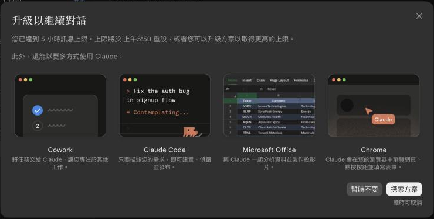
連上了卻突然不回應，先看是不是用量用完了，不是連接壞掉。用學校或公司的 Team、Enterprise 方案，要組織的擁有者先開放連接器，你才看得到。其他方案差別（模型、用量、價格），在「方案比較」那一課。
「免費版能連能讀」照官方說明；建行程、回信寄出、存檔是 2026 年 11 月 20 日用免費示範帳號實測。有報導說寄信限付費方案，我們實測免費帳號可以。
這段重點免費版都做得到，但用量很快用完
起手包與延伸
還有哪些 connector？你該連哪幾個
Google 這三個只是開始。連接器目錄裡最多人用的有這些，接法都一樣：「自訂 → 連接器 → 探索」按「＋」。
常用的 connector
照目錄「最多人使用的連接器」排序（2026-11-20）。標「未實測」的，我們還沒用免費帳號試過；有些 App 本身的功能也要對方的付費帳號。
- Google Drive：搜尋、讀取、存檔到雲端硬碟，也能匯出成 Word、Excel 下載。
- Gmail：搜尋信件、整理長串來回的信、草擬回信並寄出。
- Google Calendar：查行程、找空檔、建立或修改活動。
- Microsoft 365：連 Outlook 信件、行事曆和 OneDrive、SharePoint 檔案。官方說明寫免費版可連個人 Microsoft 帳號。
- Canva：搜尋、建立、套版和匯出設計。未實測
- Slack：讀頻道訊息、整理討論、發訊息。未實測
- Google Sheets：讀試算表、分析數字、更新儲存格。未實測
- Notion：搜尋筆記與資料庫、新增或更新頁面。免費版只確認到能開始連接
- Atlassian：Jira 工單、Confluence 文件、Bitbucket 程式碼。未實測
- Google Docs：編輯、留言、摘要 Google 文件。未實測
- Figma：讀設計稿，生成圖表或程式碼。未實測
- Supabase：管理資料庫、登入與儲存空間，給要做網站或 App 的人。未實測
依你是誰，先連這幾個
| 先連 | 也可以連 | |
|---|---|---|
| 大學生、研究生 | Gmail、Google Calendar、Google Drive | Notion（筆記）、Consensus（查研究）、Paperguide（找文獻、系統性回顧） |
| 上班族 | Gmail 或 Microsoft 365（看公司用哪套）、Google Calendar、Google Drive、Slack | Google Sheets、Notion、Asana |
| 做內容、社群 | Canva、Google Drive、Notion、Google Calendar | Windsor.ai 或 Supermetrics（抓社群、廣告成效數據，偏進階） |
| 設計 | Figma、Canva、Slack、Google Drive | Notion（整理客戶意見） |
| 寫程式／專案管理 | 寫程式：GitHub、Atlassian（Jira、Confluence）、Linear、Slack 專案管理：Asana、monday.com、Slack、Google Calendar | Vercel、Supabase（做網站的人） |
Connectors 起手包
起手包是一份 6 頁的 PDF，加一個可以直接複製的「常用指令.txt」：必連的 3 個 connector、常用連接器總覽、上面五種人各一個情境和推薦指令（大學生、研究生那頁就是這課示範的四步）、跨 App 常用指令，以及寫入前看什麼、卡住時怎麼辦。到 IG @paradigmai_tw 這課的貼文留言「connector」，我們私訊傳給你。
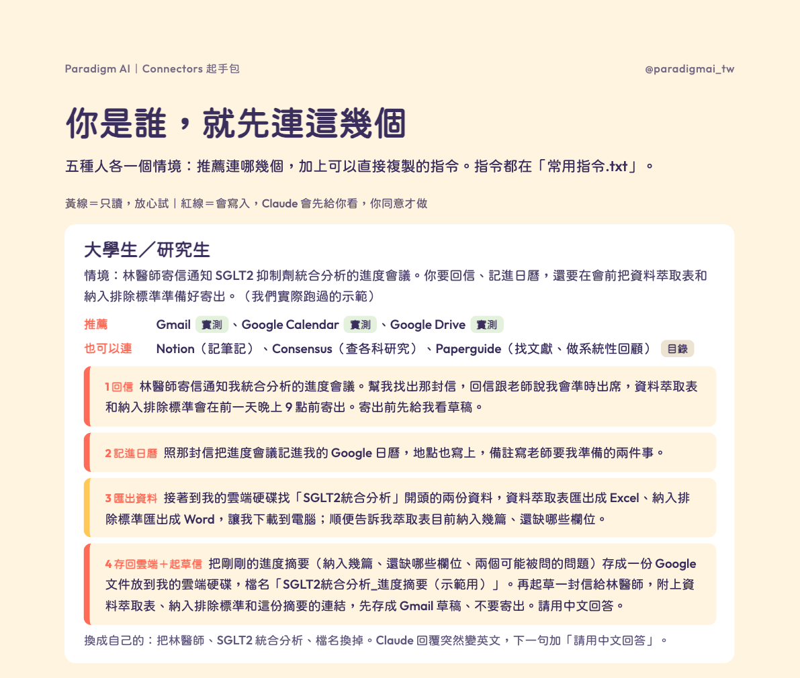
這段重點留言 connector，拿起手包
常見問題
常見問題
做到這三件，就學會了
- 連上 Gmail、Google 日曆、Google 雲端硬碟，對話裡三個開關都開著
- 在一個 Project 裡用連接器回過信、建過行程、下載過檔案
- 看過寫入確認畫面，知道什麼時候按允許一次、什麼時候按拒絕
考考你
第 1 題：設定頁顯示 Gmail「已連接」，但在新對話裡問信件，Claude 說它沒辦法存取你的信箱。最可能是哪裡沒做？
- 還要另外上傳一次信件
- 這個對話的「＋ → 連接器」裡，Gmail 的開關沒開
- 要先付費才能讀信
- 要先中斷連接再接一次
第 2 題：權限照預設、沒有開自動模式的情況下，下面哪一個動作，Claude 執行前會先跳確認、等你按？
- 搜尋這週的信件
- 讀雲端硬碟裡的一份報告
- 在日曆建一個行程
- 看下週二的空檔
接上之後怎麼控管權限，以及怎麼防信件裡藏的指令。
今天就丟出第一句跨 App 的指令。
留言「connector」，拿起手包：各族群推薦的 connector 和直接能用的指令。
不用等私訊：教學 PDF 和贈品都在 資源下載 頁，免費下載。
想看官方說明
- Use connectors to extend Claude's capabilities｜support.claude.com/en/articles/11176164
- Use Google Workspace connectors｜support.claude.com/en/articles/10166901
介面名稱與畫面是 2026 年 11 月的 Claude 網頁版（中文介面）。官方說明頁還寫「自訂›連接器」，免費示範帳號看到的是「自訂›連接器」，付費帳號是「外掛程式›連接器」；照你畫面上有的那個找。
這段重點卡住就回來翻這頁